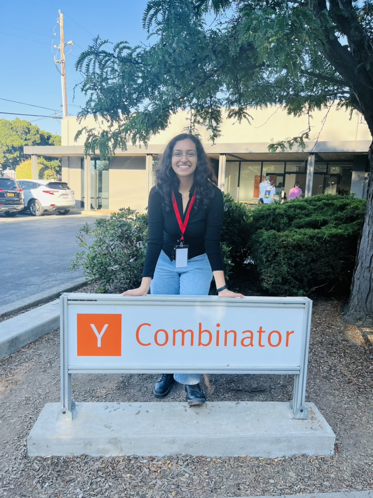

I write about various thing on my personal substack.
I also run another blog, inspired by the movie Things to Come by H.G. Wells. It talks about a technologically advanced, and peace promoting organization of aviators--Wings Over the World.
Hi! I am Khushi Mittal. I am obsessed with things that fly. Anything to do with propulsion systems, aerodynamics, space technology, and mars--I'm in!
I love having conversations about how the future is better than you think and going on unnecessarily long walks. Growing up, I’ve lived in a bunch of different places and met sooooo many people. I carry a little piece of each of these places and people with me. My enlightenment came at 17 when I realized that math and physics aren’t as bad as they’re often taught in school. That’s when I became curious about the world of technology and startups.
I studied Computing Science major with a minor in Physics at University of Alberta (the home for reinforcement learning), where I helped make an autonomous multi-rotor drone for competitions across North America and worked on research projects involving reinforcement learning and genetic programming. I later attended a summer semester at Stanford University studying Symbolic Systems and high-performance computing.
I dropped out of university and moved back to India in January, 2024.
lil religious khushi
no I was not a part of Y Combinator
I write about various thing on my personal substack.
I also run another blog, inspired by the movie Things to Come by H.G. Wells. It talks about a technologically advanced, and peace promoting organization of aviators--Wings Over the World.